iRacing 주행 코치
사용 설명서
버전 1.3.0 · 2026년 10월 18일
주행에서 문제를 찾고, 다음 주행에서 한 가지씩 개선하세요.
개인용 Windows 로컬 앱입니다. 주행 후 IBT·Garage61 비교와 셋업 실험을 돕고, 주행 중에는 한국어 스포터·피트월·마이크 질문을 제공합니다. FHD 전체 화면을 기준으로 주요 분석 정보를 한 화면에서 봅니다.
설치.bat→실행.bat- 주행 파일과 비교할 랩을 선택합니다.
- 주행 요약에서 오늘의 과제와 다음 주행 계획을 읽습니다.
- 코너 비교에서 위치·입력 차이를 확인합니다.
- 한 가지를 바꾸고 다시 달린 뒤 같은 조건으로 비교합니다.
그림을 누르면 원본 크기로 열립니다. 화면은 최신 앱에서 촬영했으며, 주행·파일·연결 상태는 개인정보 없는 합성 예시입니다. 수치는 실제 계산기로 계산한 예시이며 실주행 성능을 뜻하지 않습니다.
1. 설치와 처음 실행
- 최신 Releases의 racingcoach-setup-2.0.3.zip을 받고 원하는 폴더에 풉니다. 실행.bat이 있는 폴더를 엽니다.
- Python과 Node.js 설치, PATH 설정은 필요 없습니다. Windows x64 Python과 화면 빌드가 들어 있습니다.
설치.bat을 한 번 실행합니다. 인터넷에서 필요한 패키지를 내장 Python에 설치합니다.실행.bat을 실행하고http://localhost:24157을 엽니다. 실행 창을 닫으면 앱이 종료됩니다.- 처음 켤 때 뜨는 업데이트 창에서 빠진 음성 받기로 음성을 받습니다.
개발자용 소스 ZIP·Git 설치: Python 3.10 이상(3.12 권장)과 Node.js LTS를 설치하고 소스를 받은 뒤 설치.bat → 실행.bat을 실행합니다. 소스 설치는 패키지와 화면을 빌드합니다. 기존 사용자는 앱 업데이트 뒤에도 지금 쓰는 Python을 계속 쓰며, setup 설치본의 runtime 폴더는 앱 업데이트가 덮어쓰지 않습니다.
| 하고 싶은 일 | 필요한 것 |
|---|---|
| 주행 분석·코너 비교·내 랩 비교·셋업 실험 | IBT 파일. Google 키 불필요 |
| 스포터·엔지니어 자동 음성 | 실행 중인 iRacing과 준비된 고정 음성. 자동 보고는 AI를 호출하지 않음 |
| 마이크 질문·음성 인식·AI 답변·새 음성 합성 | Google Cloud 서비스 계정 키와 해당 서비스 설정. 요청량에 따라 본인 계정에 과금 |
| 새 Garage61 기준 수집 | Garage61 토큰. 이미 받은 기준 파일은 로컬 비교 가능 |
2. 화면과 빠른 제어
왼쪽 메뉴는 주행 요약 → 코너 비교 → 랩 분석 → 전문가 보기 → 셋업 실험 → 음성 코치 순입니다. 아래쪽에 기록·설정·사용 가이드가 있습니다. 주요 분석 화면은 페이지를 길게 스크롤하지 않도록 구성했고, 긴 목록은 해당 영역 안에서 이동합니다.
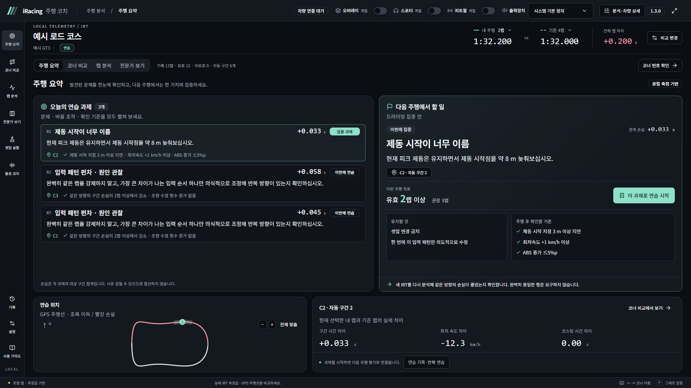
화면에 계속 보이는 빠른 제어에서 오버레이·스포터·피트월을 켜고 끌 수 있습니다. Google 음성 API가 설정되어 있으면 마이크 입력장치도 선택할 수 있습니다. 세부 값은 음성 코치·설정에서 조정합니다. 페이지를 바꿔도 활성화된 음성 기능은 유지됩니다.
3. 주행·기준 랩 선택
- iRacing에서 텔레메트리 기록을 켜고 달린 뒤 차에서 내려 IBT 저장을 마칩니다.
- 상단의 주행 선택 또는 비교 변경을 누릅니다.
- 주행 파일·내 랩·기준 랩을 고르고 선택한 랩 비교하기를 누릅니다. 다른 IBT나 Garage61 기준도 선택할 수 있습니다.
- 상단의 주행 유형·기록 랩 수·유효 랩 수와 기준을 확인합니다.
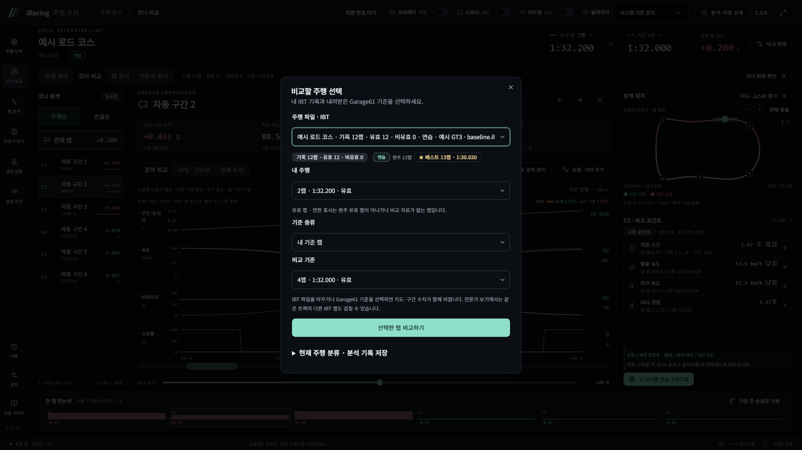
완주·유효 랩이 없거나 분석에 쓸 수 없는 파일은 연하게 표시합니다. 정상 관측 구간이 있으면 그 구간만 비교할 수 있지만, 완주하지 않은 랩에 전체 랩 기록을 만들어 붙이지 않습니다. 연습·퀄리파잉·레이스·인듀런스 표시는 세션 자료를 따릅니다.
Garage61 종합 기준은 여러 적합한 랩을 합친 기준입니다. 선택한 개수와 실제 조건을 통과해 적용된 개수는 다를 수 있습니다. 종합 그래프의 기준과 지도에서 재생할 대표 주행을 같은 한 랩으로 해석하지 마세요.
4. 주행 요약과 연습 과제
가장 중요한 두 영역은 오늘의 연습 과제와 다음 주행에서 할 일입니다. 문제·바꿀 조작·위치·성공 기준을 먼저 읽고, 다음 주행에서는 한 가지에 집중하세요. 과제를 선택해도 다른 문제 설명은 계속 보입니다.
- 과제별 관측 손실과 조작 지시를 읽고 집중할 항목을 고릅니다.
- 대상 코너를 눌러 GPS와 측정 근거를 확인하거나 코너 비교로 이동합니다.
- 이 과제로 연습 시작을 누르고 권장 유효 랩 수와 유지할 조건을 확인합니다.
- 다음 주행 후 진행 과제 확인이나 연습 기록에서 결과를 봅니다. 개선·반복·종료 판단은 새 측정 자료가 있어야 가능합니다.
과제별 대상 구간은 서로 겹칠 수 있으므로 손실을 모두 더하지 마세요. 자료가 부족하거나 뚜렷한 손실이 없으면 과제를 억지로 만들지 않습니다. 셋업 확인 계획이 나오면 그 주행에서는 운전 방법 변경과 셋업 변경을 함께 하지 않는 편이 비교에 좋습니다.
5. 코너 비교와 그래프
왼쪽 구간 목록, 가운데 그래프, 오른쪽 비교 포인트를 함께 봅니다. 구간 행 전체를 누르면 해당 코너로 이동하고 지도·그래프·설명이 같이 바뀝니다. 전체 랩은 목록 맨 위에 고정되어 있습니다.
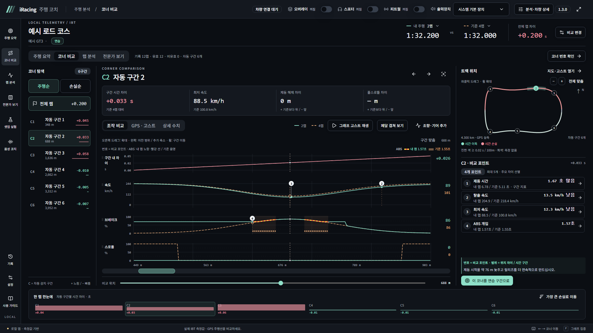
번호와 범위를 읽는 방법
그래프 위 번호는 오른쪽 비교 포인트와 연결됩니다. 번호나 설명을 누르면 측정한 위치·범위가 강조됩니다. 코너마다 차이가 의미 있는 항목을 최대 5개 골라 표시하므로 항목 수와 번호의 의미는 코너마다 달라질 수 있습니다. 자세한 수치는 상세 수치에서 확인합니다.
| 하고 싶은 일 | 마우스·키보드 조작 |
|---|---|
| 구간 확대 | 그래프에서 오른쪽으로 드래그 |
| 이전 범위·추가 축소 | 왼쪽으로 드래그. 이전 범위가 없으면 드래그 양에 따라 더 축소 |
| 현재 폭으로 다른 위치 보기 | 그래프 위 휠 또는 아래 좌우 이동 막대 |
| 채널 순서 변경 | 왼쪽 채널 이름을 좌클릭해 위아래 드래그. 키보드는 Alt+↑/↓. 변경한 순서는 다른 주행에도 자동 적용 |
| 확대 범위에서 재생 | 그래프 고스트 재생 → 일시정지·재개. 실제 구간 통과 시간을 따름 |
페달 겹치기와 ABS
조향·기어 추가를 켜면 조향도 비교합니다. 조향은 0°가 항상 세로 중앙이며 내 랩과 기준 랩을 함께 담도록 양수·음수 범위를 대칭으로 맞춥니다. 한쪽 방향의 코너나 확대 범위에서도 중앙을 유지하며 전문가 보기에도 동일하게 적용됩니다.
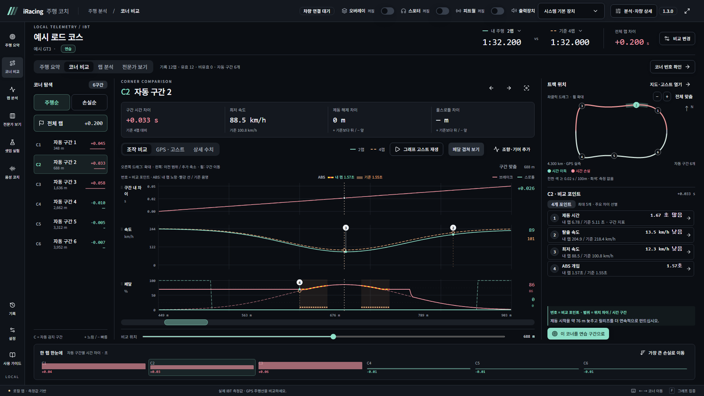
브레이크 그래프에서 내 ABS 작동은 노랑·빨강 반복 선, 기준 ABS는 음영으로 구분합니다. 신호가 없는 자료에는 ABS 작동을 추측해 그리지 않습니다. TC 작동 데이터는 불러오거나 표시하지 않습니다. 차고 설정으로서의 TC 값과 작동 신호는 별개입니다.
6. GPS·고스트와 코너 번호
GPS · 고스트에서 IBT에 기록된 GPS 주행선을 봅니다. 별도 제작 지도를 실제 주행선처럼 쓰지 않습니다. 지도에서 어느 구간이든 선택할 수 있고, 전체 랩 위치는 기준보다 시간을 번 곳·잃은 곳을 색으로 표시합니다.
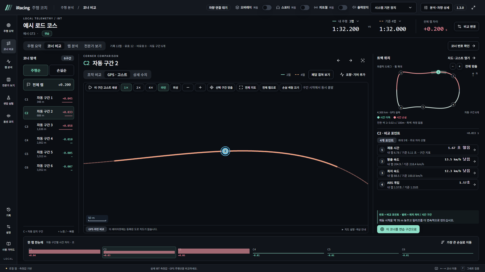
- 지도는 좌클릭 드래그로 이동하고 휠 또는 +/−로 확대·축소합니다. 전체 맞춤으로 돌아갈 수 있습니다.
- 고스트 재생은 선택한 구간 입구에서 두 랩을 동시에 출발시킵니다. 전체 랩의 누적 시간차가 커도 그 코너의 조작을 비교할 수 있습니다.
- 1×·2×·4×로 재생 속도를 바꿉니다. 먼저 탈출한 차량은 구간 끝에서 기다립니다. 시간·위치 관측이 끊긴 곳을 임의로 이어 달리지 않습니다.
- 긴 트랙의 아래 구간 막대는 내부에서 가로로 스크롤합니다. 그래프·지도 선택을 바꾸면 선택한 구간이 가운데에 오도록 따라갑니다.
공식 번호 연결
코너 번호 확인을 누르면 왼쪽 iRacing 공식 지도와 오른쪽 GPS 자동 구간을 나란히 봅니다. 자동 번호를 누르고 코너 번호·이름·음성으로 부를 말을 입력해 수정 내용 확정을 누르세요. 여러 코너가 한 자동 구간이면 “5-7”처럼 묶고, 번호가 없으면 이름만 적어도 됩니다.
오른쪽 지도는 Ctrl+좌클릭을 누른 채 위로 움직이면 반시계, 아래로 움직이면 시계 방향으로 회전합니다. 숫자는 똑바로 유지됩니다. 공식 지도 제안은 직접 확인한 뒤 확정하세요. 확정한 이름은 같은 트랙의 다른 주행과 음성 안내에도 적용됩니다.
7. 랩 분석과 기록
랩별 시간 쓰임새·코너별 일관성·랩 기록과 최적 랩을 봅니다. 상단에서 분석할 랩과 범위를 골라 아웃랩·인랩·이상치 등 비교 목적에 맞지 않는 랩을 제외하세요.
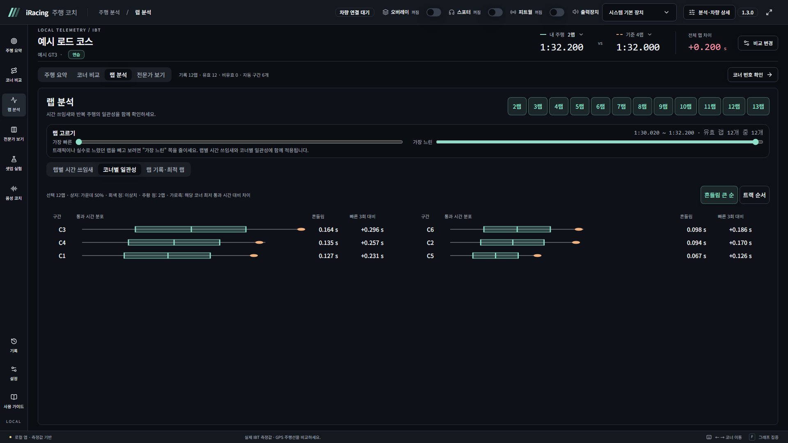
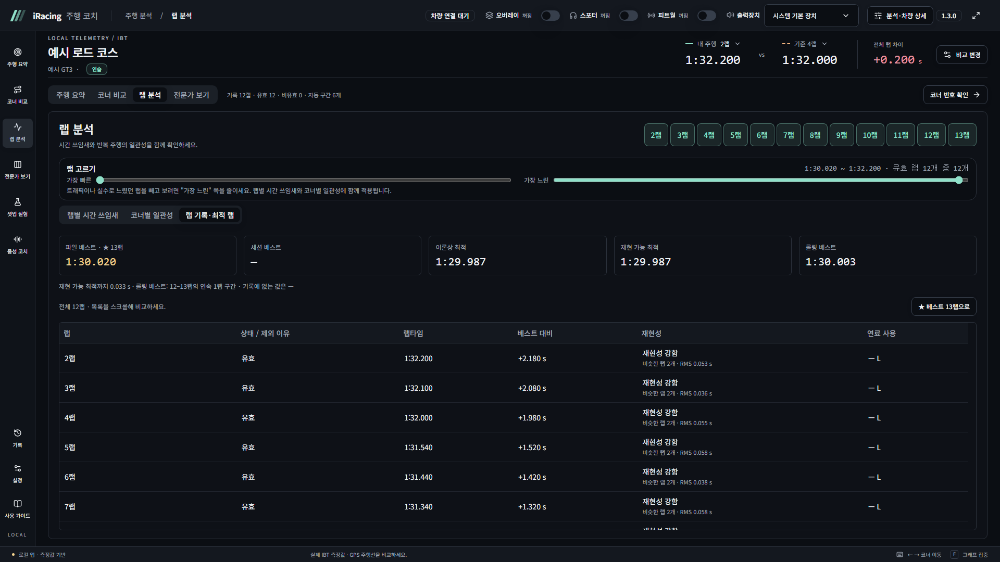
이론상 최적 랩은 가장 빠른 구간들을 합친 값이며 실제 한 번에 주행한 랩이 아닙니다. 롤링 랩은 출발선 외 위치에서 시작한 연속 한 바퀴를 봅니다. 두 값을 실제 완주 베스트와 구분하세요.
8. 전문가 보기
여러 랩을 같은 거리 축으로 겹칩니다. 내 랩은 최대 8개, 외부 랩은 최대 4개를 추가할 수 있습니다. 기준으로 삼을 랩의 별표를 확인하고 속도·브레이크·스로틀·조향·기어·RPM·횡G·종G 등을 선택합니다.
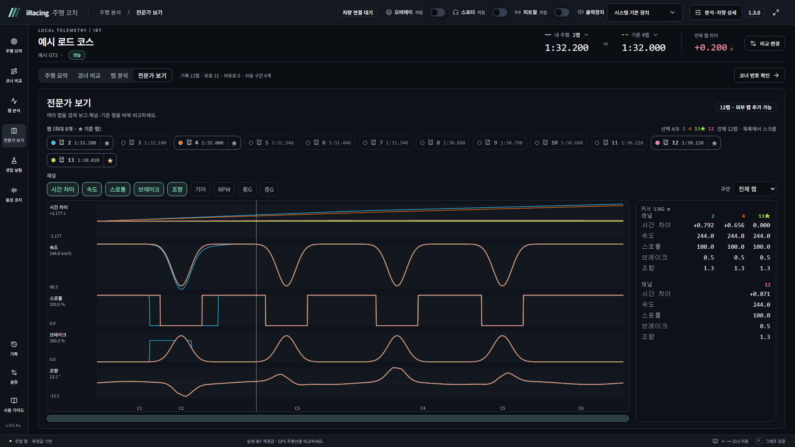
그래프에서 마우스를 움직이면 옆 수치가 그 위치를 따라갑니다. 드래그 확대·축소와 휠 이동은 코너 비교와 같습니다. 다른 IBT·Garage61을 추가할 때는 차량·트랙·조건이 비교에 적합한지 확인하세요.
9. 셋업 실험 반복하기
한 번에 좋은 셋업을 정해 주는 대신 문제 선택 → 한 항목 변경 → 다시 주행 → 체감과 측정 비교 → 다음 결정을 반복합니다. 차고 값은 사용자가 직접 바꿉니다.
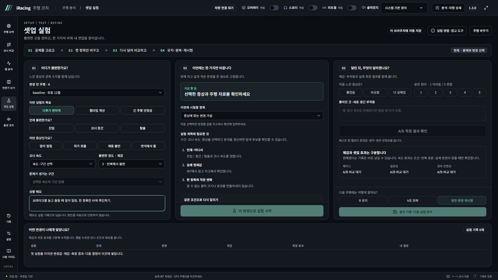
- 변경 전 주행 A를 고르고 진입·중간·탈출, 속도, 증상, 불편한 정도와 구간을 선택합니다. 상황 메모에 실제로 느낀 점을 적습니다.
- 관측 근거와 현재 차고 값을 보고 한 항목의 작은 변경을 준비합니다. 근거가 없으면 추천을 억지로 만들지 않습니다.
- 이 변경으로 실험 시작을 누른 뒤 게임 차고에서 해당 항목만 바꿉니다.
- 연료·타이어·노면 조건과 운전 방법을 가능한 한 유지하며 B를 기록합니다. 효과 확인에는 일반적으로 A/B 각각 유효 3랩 이상, 인듀런스는 5랩 이상을 확보합니다.
- 변경 후 새 주행 B를 연결하고 증상 변화·운전 편의·새 부작용을 적습니다. A/B 측정 결과 확인에서 중앙 랩타임·편차·완주 안정성을 함께 봅니다.
- B 유지 / A 원복 / 같은 변경 재시험을 고르고 결과를 기록합니다. 이력에서 당시 조건을 열어 다음 실험을 이어갈 수 있습니다.
10. 음성 코치와 경기 전 준비
음성 코치의 세 열에서 질문·오디오, 스포터, 피트월을 설정합니다. 각 열은 필요한 경우 안에서 스크롤하므로 많은 설정도 유지됩니다. 스포터를 켜면 엔지니어 자동 보고도 시작하며, 피트월은 별도로 끌 수 있습니다.
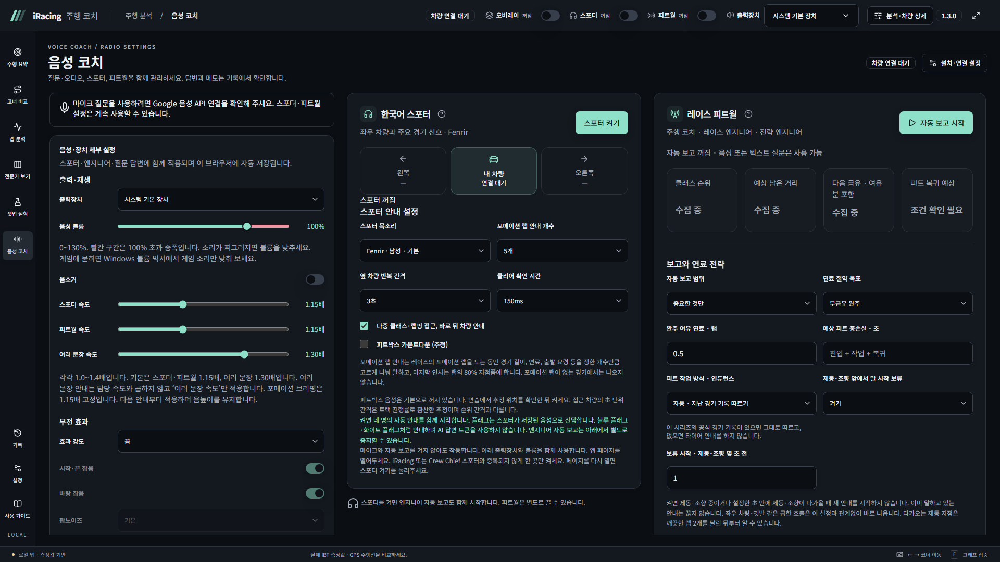
스포터
좌우 겹침·클리어·접근·깃발·랩타임·포메이션 안내를 설정합니다. 목소리, 앞 차량 간격, 클리어 확인 시간, 포메이션 안내 개수 등 세부 값은 스포터 열에 있습니다. 스포터 목소리는 Fenrir·Algieba·Schedar·Aoede 중 선택합니다. 안내 개수 0은 포메이션 안내를 끕니다.
피트월
자동 보고 범위는 중요한 것만 / 일반 보고 포함 / 끄기 중 선택합니다. 완주 여유 연료, 예상 피트 총손실, 연료 절약 목표, 피트 작업 방식과 말 시작 보류를 경기 전에 확인하세요. 급유량·연료·간격·순위는 관측값으로 계산하며 상대의 연료나 손상을 추측하지 않습니다.
자동 안내는 조작 부담이 낮고 끝까지 말할 여유가 있는 구간을 고릅니다. 오래된 보고는 재생 직전에 다시 확인해 버립니다. 마이크로 물은 질문의 답변이 가장 먼저 나오며 다른 음성이 끊지 못합니다. 좌우 접촉 경고는 자동 안내 가운데 가장 우선합니다.
마이크 질문
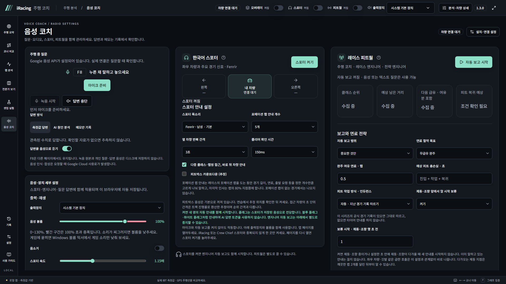
- 설정에서 Google 키를 등록합니다. 음성 질문에는 Speech-to-Text·Text-to-Speech, AI 설명에는 Vertex AI 사용 설정이 필요합니다.
- 빠른 입력장치 선택에서 마이크를 고르고 브라우저 권한을 허용합니다. 장치 이름이 안 보이면 먼저 마이크 접근 권한을 확인하세요.
- 마이크 준비를 누른 뒤 F8을 누른 채 말하고 놓습니다. 다른 페이지에서도 유지됩니다. 화면의 녹음 시작·완료 버튼도 사용할 수 있습니다.
- 측정값 답변은 알려진 수치를, AI 원인 분석은 측정 근거에 기반한 설명을, 메모만 기록은 코너·상황 메모를 남깁니다. 분석 화면에서 별도로 요청하는 비음성 AI 분석은 제공하지 않습니다.
마이크 원음과 개인 질문·답변 음성은 디스크에 저장하지 않습니다. 인식된 문장과 메모는 기록에서 확인할 수 있습니다. 이미 받은 고정 안내는 로컬에서 재생하고, 음성 인식·새 합성·AI 요청은 Google 사용료가 발생합니다.
볼륨과 재생 속도
음성·장치 세부 설정에서 음성 볼륨을 0~130%로 조절합니다. 100%를 넘는 구간과 손잡이는 빨간색이며 음성을 증폭합니다. 소리가 찌그러지면 낮추세요. 게임 소리에 묻히면 Windows 볼륨 믹서에서 게임 소리만 낮추거나 무전 효과의 바탕 잡음을 줄여 보세요.
스포터·피트월·여러 문장 속도를 각각 1.0~1.4배로 조절합니다. 기본은 스포터·피트월 1.15배, 여러 문장 1.30배입니다. 한 문장에는 담당 속도, 둘 이상의 클립을 잇는 안내에는 여러 문장 속도만 적용하며 서로 곱하지 않습니다. 포메이션 브리핑은 1.15배 고정입니다. 음높이를 유지하고 다음 안내부터 적용합니다. 볼륨·음소거·속도는 같은 브라우저 주소에 저장됩니다.
경기 전에 확인할 것
- 앱을 켜고 스포터·피트월을 원하는 상태로 둡니다.
- 출력장치·볼륨·음소거·테스트 소리와 무전 효과를 확인합니다.
- 질문하려면 입력장치 권한과 마이크 준비를 확인합니다.
- 완주 여유 연료와 피트 작업 방식(동시/순차 교체)을 확인합니다.
- 처음 가는 조합은 깨끗한 랩을 두 개 이상 달려 관측 자료를 쌓습니다.
앱 브라우저를 열어 두어야 음성이 유지됩니다. 외부 스포터의 발화를 감지하지 못하므로 iRacing·Crew Chief와 중복 안내가 나오는지 직접 확인하세요. 실제 게임·F8·마이크·스피커 동작은 각 PC에서 확인해야 합니다.
11. 기록과 로그 보내기
기록에 셋업 이력, 개인 주행 기록, 코너 메모, 실시간 비교, 음성 진단과 세션 로그가 모여 있습니다. 최근 DB 저장 세션·대화로 남긴 코너·음성 답변·코너 메모는 처음에는 접혀 있으며 제목을 누르면 펼칩니다. 접기는 표시만 바꾸며 저장한 기록을 삭제하지 않습니다.
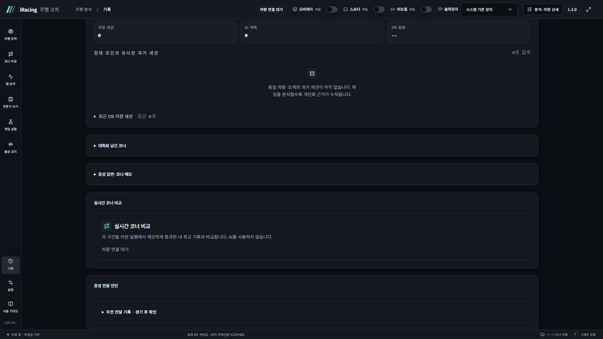
이상한 안내를 받았다면
- 기록 아래쪽 세션 로그에서 해당 주행을 찾습니다.
- 보내기가 제공되면 메모에 몇 랩·어떤 상황·무엇이 이상했는지 적고 직접 전송합니다. 세션 로그 자동 보내기를 켜지 않았다면 누를 때만 전송합니다.
- 세션 로그 자동 보내기를 켜면 안내 창에서 동의한 뒤부터 주행이 끝날 때마다 한 번씩 자동으로 보냅니다. iRacing과 LMU에 함께 적용되며 끄면 바로 멈춥니다.
- 보내기가 없거나 실패하면 로그 파일 받기로 ZIP을 내려받아 직접 전달합니다.
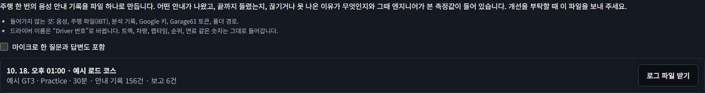
로그에는 호출 시각·랩 위치·전달 결과·당시 계산값·트랙·차량·앱 버전이 들어갑니다. 음성·IBT·키·토큰·폴더 경로는 포함하지 않으며 드라이버 이름은 익명 처리합니다. 마이크 질문·답변은 별도 포함을 선택했을 때만 들어갑니다. 압축을 풀면 JSON 내용을 직접 확인할 수 있습니다.
12. 설정·키·데이터 보관
설정에서 오디오·무전 효과·오버레이·설치 설정·Garage61 기준 수집·음성 준비를 관리합니다. 스포터·피트월의 상세 동작 설정은 음성 코치에 있습니다.
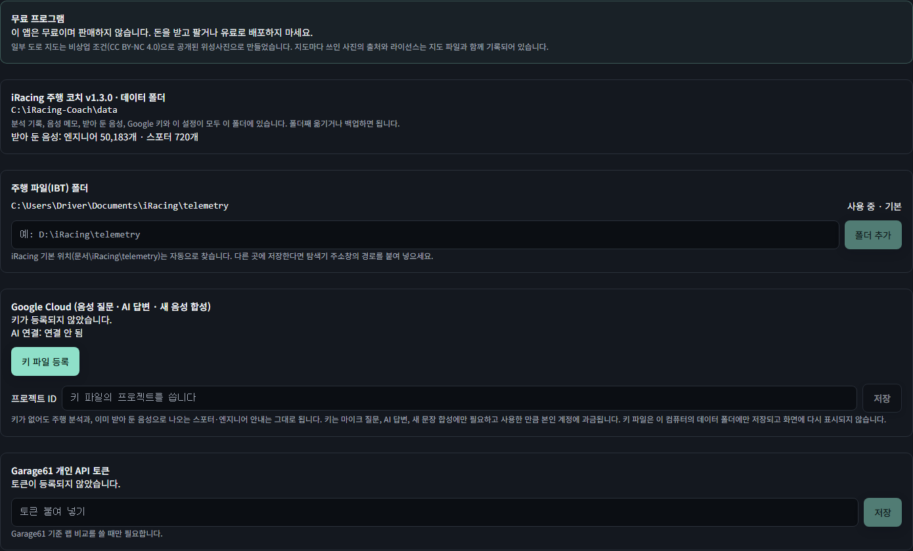
- IBT 폴더: 기본 문서\iRacing\telemetry를 자동으로 찾습니다. 다른 위치라면 폴더 경로를 추가합니다.
- Google Cloud: 서비스 계정 JSON 키를 등록합니다. 키 자체는 다시 표시하지 않습니다. 프로젝트 ID는 비우면 키 파일의 프로젝트를 씁니다.
- Garage61: 개인 API 토큰을 등록합니다. 토큰이 없어도 내 랩 분석과 스포터는 사용할 수 있습니다.
- 음성 미리 준비: 빠진 고정 문장을 받을 때만 실행합니다. 새 합성은 Google 비용이 발생하며 받은 것은 다음에도 재사용합니다.
주행 오버레이
설정의 오버레이에서 미리보기를 켜고 크기·위치·불투명도를 조절한 뒤 현재 설정 저장·고정을 누릅니다. 고정하면 클릭이 게임으로 전달됩니다. 주행 중 자동 표시를 켜면 차에 타서 트랙에 있을 때 보여 줍니다. 기준과 내 페달·기어·직전 코너 차이를 보며, 차 밖·리플레이·연결 끊김에서는 이전 상태를 이어 보여 주지 않습니다.
IBT를 지우기 전
IBT를 삭제하면 그 파일의 그래프·랩·코너를 다시 계산하거나 A/B 파일로 사용할 수 없습니다. 이미 저장한 세션 요약·실험 결과·메모·코너 이름·로그는 남지만 원본 주행으로 이동할 수 없게 됩니다. 진행 실험 A/B, 최근 주행, 좋은 기준 주행은 보관하고 중요한 파일은 먼저 분석·백업하세요.
설정 화면에 표시된 데이터 폴더를 백업하세요. 공유 설치본은 보통 프로그램의 data 폴더를 사용하지만, 개발 환경이나 환경 변수로 바꾼 설치는 별도 위치일 수 있습니다. 진행 셋업·출력장치 등 브라우저 저장소도 있으므로 다른 PC로 옮긴 뒤에는 해당 설정을 다시 확인하세요.
13. 문제 해결과 사용 가이드
| 증상 | 확인할 것 |
|---|---|
| 설치가 실패함 | 최신 설치.bat인지 확인합니다. 안내가 있으면 Python 3.12를 추가하고 설치를 다시 실행합니다. |
| 화면이 안 열리거나 포트를 사용 중이라고 나옴 | 이미 켜진 앱이 있는지 확인하고 http://localhost:24157을 엽니다. |
| IBT가 없음 | 텔레메트리 기록·저장 완료·실제 IBT 폴더 등록을 확인합니다. 기록 중 파일은 안정된 뒤 읽습니다. |
| 분석할 랩이 없거나 그래프 일부가 비어 있음 | 완주·유효 여부와 제외 이유를 확인합니다. 미관측 구간·없는 채널은 추측해서 채우지 않습니다. |
| 음성이 안 나옴 | 앱 브라우저·스포터·피트월·출력장치·볼륨·음소거·준비된 음성을 확인합니다. |
| 마이크 메뉴가 안 보임 | Google 음성 API 설정이 없으면 숨깁니다. 설정에서 키·서비스·연결 상태를 확인합니다. |
| 마이크가 목록에 없거나 F8이 안 됨 | 브라우저·Windows 마이크 권한을 허용하고 입력장치·마이크 준비를 확인합니다. 화면 녹음 버튼으로도 시험합니다. |
| 고스트가 안 나오거나 위성이 비어 있음 | GPS·시간 채널과 공통 관측 구간이 있는지 확인합니다. 위성은 인터넷이 필요하며 라인으로 전환할 수 있습니다. |
| 공식 코너 번호로 안 부름 | 코너 번호 확인에서 번호를 확인하고 수정 내용 확정을 누릅니다. |
| 새 화면이 안 보임 | 앱을 종료해 최신 버전으로 다시 실행하고 브라우저를 새로고침합니다. |
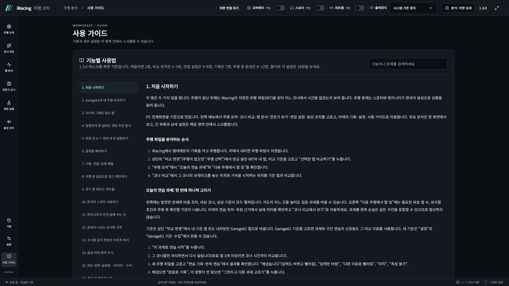
14. 업데이트와 공유
- 앱을 종료하고 기존 프로그램 폴더와 실제 데이터 폴더를 백업합니다.
- GitHub Code → Download ZIP을 새로 받아 임시 위치에 풉니다. racingcoach-main 안의 내용물을 기존 실행.bat 폴더에 덮어쓰고 data는 삭제하지 않습니다.
설치.bat을 다시 실행해 패키지와 화면 빌드를 갱신합니다.- 출발 버전 → 1.3.0 음성팩을 같은 프로그램 폴더에 풀어 data/radio_audio, data/spotter_audio를 합칩니다.
실행.bat으로 켜고 브라우저를 새로고침합니다.
각 음성 업데이트팩은 1.3.0으로 바로 적용합니다. 처음 설치하거나 기존 음성이 빠졌으면 전체 음성팩을 받습니다. 1.3.0: 음성 추가 없음. 1.2.0의 전체 음성이 있으면 다시 받을 필요가 없습니다. 데이터 폴더를 따로 지정했다면 그 실제 경로에 음성을 합칩니다.
음성 다운로드: Google Drive 공유 폴더. 프로그램은 GitHub 소스로 받고 별도 프로그램 배포 ZIP은 사용하지 않습니다. 개인 설치 폴더와 키·토큰을 다른 사람에게 그대로 주지 마세요. 이 프로그램은 무료이며 판매하거나 유료로 배포하지 않습니다.